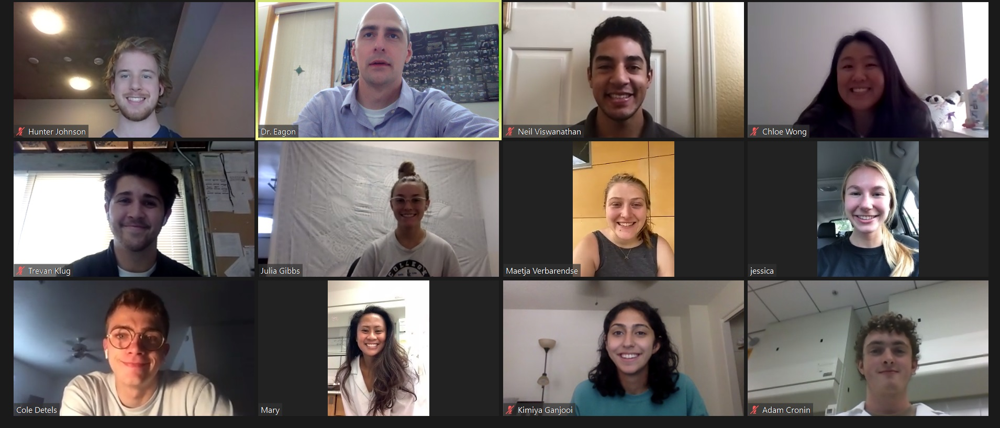

Welcome to the E-Lab!
(Left
to right, top to bottom: Hunter, Dr. Eagon,
Neil, Chloe, Trevan, Julia, Maetja, Jessica, Cole,
Mary, Kimiya and Adam. Not pictured: Eli)
Our research group focuses on the
development of small molecule pharmaceuticals and probes,
particularly those targeting infectious diseases and
cancer. Students are involved in all aspects of drug
synthesis and pre-clinical development. Our group is
also interested in developing new synthetic methods to
produce compounds quickly & with minimal purification in
an effort to reduce development costs. Students
majoring in Chemistry, Biochemistry, or related majors are
welcome to join, but two quarters of organic chemistry
lab are normally required to join due to the
complexity of the chemistry involved.
Students minoring in computer science or those with
experience in Unix environments are also welcome to
contribute to our in silico drug screening
program. Current projects include the development of
kinase-based chemotherapy agents, biological probes to
better understand disease-related proteins, anti-malarials
with novel modes of action targeting multi-drug
resistant strains of Plasmodium falciparum, the
development of host-orientated compounds to combat anthrax
and the Ebola virus, the development of new classes of
antibiotics, and in silico screening programs to
discover new drug candidates for infectious diseases.